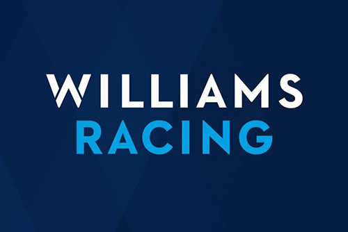

Williams Racing

Williams Grand Prix Engineering Limited,1 comúnmente conocido como Williams Racing, es un equipo de Fórmula 1 creado en 1977 por Frank Williams y Patrick Head.
Williams es considerado uno de los cuatro grandes equipos de Fórmula 1, junto con Ferrari, McLaren y Mercedes.2 La primera carrera de la escudería fue en el Gran
Premio de España de 1977, cuando el equipo corrió con un chasis March y Patrick Nève como piloto. Williams comenzó a construir sus propios autos el año siguiente.
El suizo Clay Regazzoni ganó la primera carrera para el equipo en el Gran Premio de Gran Bretaña de 1979, mientras que en el Gran Premio de Gran Bretaña de 1997, el
canadiense Jacques Villeneuve ganó la carrera número 100 para el equipo. De esta manera, Williams se convirtió en uno de los únicos tres equipos en Fórmula 1, junto
con Ferrari y el también inglés McLaren, en ganar 100 carreras.
Siete pilotos han sido campeones mundiales con Williams: Alan Jones, Keke Rosberg, Nelson Piquet, Nigel Mansell, Alain Prost, Damon Hill y Jacques Villeneuve. A su vez,
el equipo ganó 9 Campeonatos de Constructores entre 1980 y 1997. Este fue un récord hasta que Ferrari lo superó en el año 2000.
Williams ha trabajado con muchos constructores de motores, pero más satisfactoriamente con Renault: Williams ganó 5 de sus 9 Campeonatos de Constructores con la casa
francesa.
Todos los autos de Williams son llamados "FW-número", por las iniciales del cofundador del equipo, Frank Williams. Además de Fórmula 1, Williams también participó en
otros campeonatos de automovilismo, tanto como constructor como equipo.
En 2020, tras más de 40 años de participación y a pesar del prestigio cosechado en el ámbito de la Fórmula 1, el equipo fue adquirido por el holding financiero Dorilton
Capital, quienes compraron el equipo a la familia Williams en agosto y presentaron a su nueva junta directiva en septiembre.
Otras actividades
En 1984, Williams participó en el desarrollo del MG Metro 6R4, un automóvil de rally del Grupo B.
Williams compitió en el Campeonato Británico de Turismos desde 1995 hasta 1999 como equipo oficial de Renault, participando con el Renault Laguna. El suizo Alain Menu
fue campeón de pilotos con Williams en 1997, y la marca francesa obtuvo el título de marcas de 1995 y 1997. Como parte del programa de Renault en la Fórmula 1 y en
turismos en diversos países de Europa, la versión deportiva del Renault Clio I llevó el nombre Williams, aunque el equipo no se involucró en el desarrollo.
Williams desarrolló el monoplaza de Fórmula 2 que se usa desde el resurgimiento del campeonato en 2009, que lleva motores Audi. Asimismo, como parte del acuerdo con
el grupo Volkswagen, Williams desarrolló un sistema de recuperación de energía cinética para el Porsche 911 híbrido que compitió en varias carreras de gran turismos.